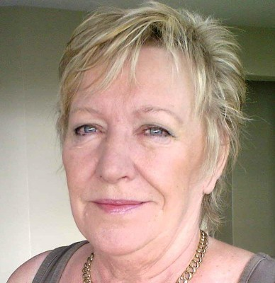
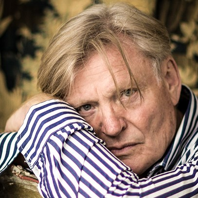
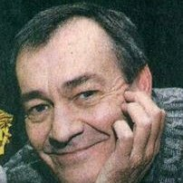

Über mich
Ich wurde in Südafrika geboren und bin 2014 nach Deutschland gezogen. Als Freigeist war ich schon immer süchtig nach dem Nervenkitzel des Schaffens. Kunst war natürlich eines meiner Schulfächer, und für die Abschlussprüfung nominierte mich mein Kunstlehrer für eine Auszeichnung – leider hat es nicht ganz gereicht. Danach begann ich ein Studium der Bildenden Kunst, wechselte nach dem ersten Jahr aber zum Modedesign und schloss mit einem Diplom ab. Ich arbeitete zunächst als Designerin in einer Brautboutique und hatte bald meine eigene Modeboutique. Ich habe immer große gedankliche Sprünge gemacht und Neues begonnen.
Mit der Kunst ist es ähnlich, deshalb beschreibt „vielfältig“ meine Arbeit gut. Mein Ziel ist es, etwas zu schaffen, das eine Stimmung oder einen Charakter darstellt oder ausdrückt, was ich beim Thema empfinde. Das kann alles sein: Porträts, Stadtlandschaften, Tiere, Blumen oder Abstraktes. Das Thema jedes Bildes bestimmt spontan Materialien und Stil, doch was ich tue, muss immer irgendwie Sinn ergeben. Malen ist für mich therapeutisch, ähnlich wie Meditation – mein Weg, inneren Frieden zu finden.
Mein Stil ist überwiegend impressionistisch, hat sich zuletzt aber dem Surrealismus genähert, einer Technik, die dem Unbewussten Ausdruck verleiht. Meine abstrakten Arbeiten sind meist geplante Kompositionen, rational und ruhig; die Spannung entsteht zwischen Farben und Formen. Ich experimentiere mit Pinseln, Spachteln, Schwämmen und sogar mit den Fingern, und neben Öl, Acryl und Aquarell verwende ich gern Strukturpaste, Blattgold und Collage, besonders in meinen abstrakten Arbeiten.
Ich möchte die Erfahrung, Geschichten zu malen und Gefühle in meine Arbeit einfließen zu lassen, weiter vertiefen.
Ausstellungen & Anerkennung
Vor der Leinwand
Zwei Experten über meine Arbeit
In ihren jüngsten Arbeiten erkundet die bildende Künstlerin Mica Leiner die ganze Bandbreite figurativen Kunstschaffens. Verschiedene Stilrichtungen zeigen ihren einzigartigen und vielfältigen Stil. Ihre Bildsprache umfasst eine persönliche Aneignung des Impressionismus, einen atmosphärischen Expressionismus und eine starke Neigung zur Abstraktion, die sich besonders in den farbenfrohen Stadtlandschaften und Blumenstudien zeigt.
Die Reihe ikonischer Porträts verrät einen feinen Sinn für Beobachtung und Charakterdarstellung, der sich zu einer stimmigen Studie der Persönlichkeit fügt. Besonders gelungen zeigt sich das in den Porträts von Nelson Mandela und Mahatma Gandhi.
Die Abstraktionen erinnern an die kontrastreiche Farbskala der Konstruktivisten und der späteren amerikanischen Farbfeldmaler des 20. Jahrhunderts.
Diese Auswahl zeigt eine talentierte Künstlerin mit eigenem Ausgangspunkt und großem technischem Können.

Louis Jansen van VuurenKünstler und Autor mit mehr als fünfzig Ausstellungen; von 1974 bis 2000 Dozent für Kunst an der Universität Kapstadt.Seit vielen Jahren bewundere ich Maricas Fähigkeit zu malen, zu zeichnen und Form, Struktur, Farbe und Technik zu beherrschen. Sie wurde geboren, um kreativ zu sein, und hat stets Arbeiten von sehr hohem, ansprechendem ästhetischem Niveau geschaffen. Die Worte von Henri Matisse fassen ihre Arbeit und Haltung treffend zusammen: „Ein Künstler darf niemals Gefangener seiner selbst sein, Gefangener eines Stils, Gefangener seines Rufs, Gefangener des Erfolgs …“
Ein Gefühl von Leere und Stille kehrt in mehreren ihrer Werke wieder. Die verlassenen, gestrandeten „Fischerboote an Land“ sind das beste Beispiel: Die Kargheit und die ruhige, geheimnisvolle Atmosphäre fesseln, sind fast verführerisch und rätselhaft, und ihre feinfühlige Pinselführung verstärkt die düstere Stimmung des Bildes.
Den liegenden Akt „Nostalgie“ empfinde ich als das sinnlichste Werk. Er erinnert mich an Modiglianis ruhige, beherrschte Formen und Flächen und an die Schlichtheit von Matisses Akten. Einige ihrer abstrakten Bilder stehen in direktem Gegensatz zu dieser Stille: Die Bewegung, die sie einfangen und ausstrahlen, ist zugleich verwirrend und energiegeladen.
Die Porträts spiegeln die Würde und den Adel der Dargestellten und fangen ihren Charakter ein. Gandhi und Mandela wären stolz auf ihre Interpretationen, die ihnen in vieler Hinsicht gerecht werden.
Statt uns zu konfrontieren, schafft ihre Arbeit Harmonie und hinterlässt ein Gefühl der Vollständigkeit. Pablo Picasso sagte: „Die Kunst wäscht den Staub des Alltags von der Seele.“ Genau das tut ihre Arbeit, und sie ist zeitlos – das erreichen nur sehr wenige Künstler in ihrem Leben.

Hansie VisagieFünfzehn Jahre Leiter der Kunstabteilung von City Varsity in Kapstadt; zuvor Lehrbeauftragter an den Universitäten Pretoria und Johannesburg; Gründer und künstlerischer Leiter der Little Marionette Company.